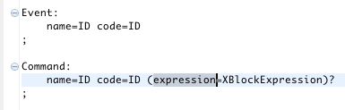
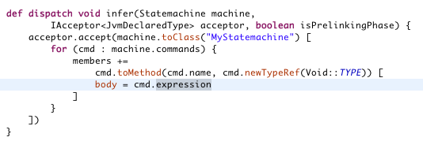

| Embed expressions easily |
Embedding the expression language Xbase in your own language has become very simple. For most cases
it is enough to specify how your language concepts relate to the JVM typesystem. The framework then derives
all other services such as scoping or even the code generator from this mapping automatically.


|
| Editor Improvements |
Selection can now be enlarged/shrinked with regard to the semantics by using CTRL-SHIFT-[LEFT|RIGHT].
Upper case letters are matched to camel case names in content assist. The outline view shows better
defaults.

|
| Refactoring |
Rename refactoring has been revised and allows you to reliably rename elements and references
across language and resource boundaries. Saving and inline editing can be configured in the
preferences.

|
| Builder Performance |
The performance of the builder has had special attention. It not only runs less often now, but it
also adapts better to files with different sizes. The resource loading can be parallelized to
further minimize build times.

|
| Enhancements for Xbase Expressions |
A couple of additions to the syntax allow you to simplify Xbase expressions even further:
-
We have introduced a second implicit variable named it. As opposed to the existing
this, you can declare and override it, e.g. as a function parameter.
-
If the last argument of a function call is a closure it can now be specified after the
feature call. This way you can provide extension libraries that look like new statements.
In combination with it and procedures you can for example create object trees using
a very elegant syntax.

|
| Testing Framework Enhancements |
A new experimental extension to the testing framework allows JUnit4-Tests to be parameterized
with DSL files. Expectations can be configured right within the DSL files using comments.
|
| More Syntactic Sugar for Expressions |
The following additions to the syntax allow you to simplify Xtend expressions even further:
-
We have introduced a second implicit variable named it. As opposed to the existing
this, you can declare and override it, e.g. as a function parameter.
Use it to omit a single parameter in closures or as the default variable in create
extensions.
-
Xtend now supports procedures. If a closure does not return a value you don't have to specify
it.
-
If the last argument of a function call is a closure it can now be specified after the
feature call. This way you can provide extension libraries that look like new statements.
In combination with it and procedures you can for example create object trees using
a very elegant syntax.
|
| Visibility |
Members of Xtend classes can now be defined as 'private', 'protected' or 'public'. The
default visibility stays 'public' for classes and methods and 'private' for fields. The
visibility of a derived dispatcher method is inferred from its dispatch methods.

|
| Unnamed @Inject Extensions |
The name of an field can be omitted, if the field is injected as an extension. Its features
stay accessible via the extension call syntax.

|
| Improved Type Inference |
The type inference for generic types and arrays has been improved, such that you can skip
explicit type declarations in even more cases.

|
| Organize Imports |
Import statements in Xtend files can now be organized as in JDT: Unused imports are marked and can
be automatically pruned using the "Organize Imports" action. Wildcard imports have been deprecated.

|
| Editor Look and Feel |
Editing Xtend has become more comfortable: You can now enlarge/shrink the selection based on the
semantics using CTRL-SHIFT-[LEFT|RIGHT]. Content assist matches upper case letters to camel case
prefixes. Xtend files are colored semantically to better highlight extension calls, deprecation etc.
We have added more validation rules to help the user writing correct Xtend code.

|
| Editor Navigation |
An go to Xtend source hyperlink has been added for generated java types, which directly opens the source
xtend file. By default, the hyperlink appears when you hold down the Ctrl key while hovering over
a generated java type.

|
| Improved Java Code Generation |
The code generator translates comments from Xtend artifacts to JavaDoc in the generated Java code.

|
| Refactoring |
Rename refactoring has been revised to integrate seamlessly with JDT. Declarations and references
are correctly updated in Java as well as in Xtend code, no matter where the refactoring has been
triggered.

|